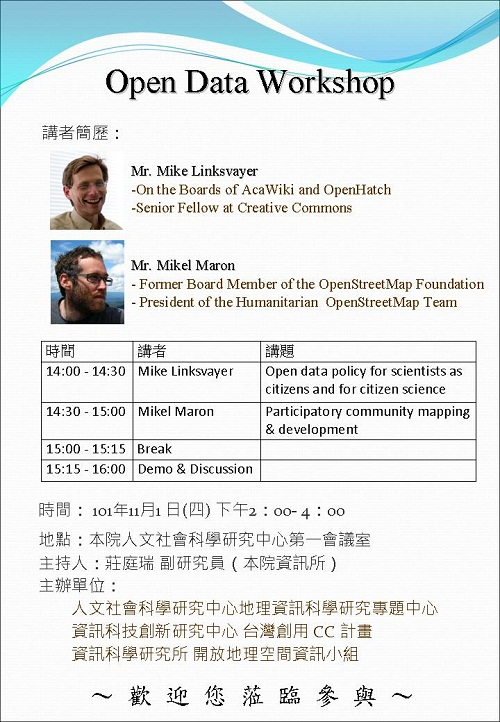

11月1日 Open Data Workshop 將於中央研究院社會科學研究中心舉行！

2012 年 11 月 1 日，Open Data Workshop 將於中央研究院社會科學中心的第一會議室舉行，這次特別邀請到 Creative Commons 的資深研究員 Mr. Mike Linksvayer 以及 Humanitarian OpenStreetMap Team 的主席 Mr. Mikel Maron 帶來兩場關於開放資料相關的精彩演講，期望能夠將國際趨勢引導到國內，讓更多關心開放資料議題的朋友能夠參與這個世界性的活動！
- 時間：2012年11月1日 14:00~16:00
- 地點：中研院人文社會科學研究中心第一會議室
- 講題：
- Open data policy for scientists as citizens and for citizen science (Mike Linksvayer, On the Boards of AcaWiki and OpenHatch, Senior Fellow at Creative Commons)
- Participatory community mapping & development (Mikel Maron, Former Board Member of the OpenStreetMap Foundation, President of the Humanitarian OpenStreetMap Team)
- 主持人：莊庭瑞（中研院資訊所副研究員）
- 主辦單位：
